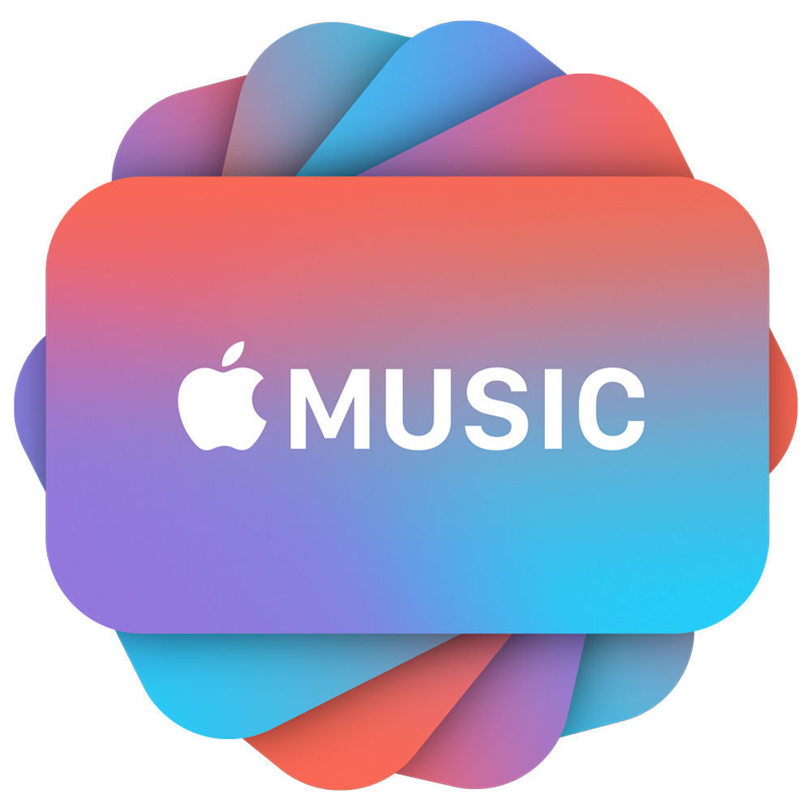

<div class="container">
  <div
    class="message-container bg-white p-5 rounded shadow"
    data-aos="fade-up"
    data-aos-duration="800"
    data-aos-delay="600"
  >
    <h1 class="message message-header">Welcome</h1>
    <h6 class="message message-content">
      This page will help you to find Albums of your favorite artist.
    </h6>
    <h6 class="message message-content">
      Try something like Jack Johnson.
    </h6>
    
    <div
      class="col-xl-6 col-sm-12 col-12 message-container-more-information"
      data-aos="fade-up"
      data-aos-duration="700"
      data-aos-delay="1000"
      data-aos-anchor-placement="top-bottom"
    > 
      <p class="text-center message-more-information">
        This is a demo application for an intership program. For more
        information about the APIs used
        <a
          href="https://affiliate.itunes.apple.com/resources/documentation/itunes-store-web-service-search-api/"
          target="_blank"
          >click here.</a
        ><br>
        Developed by Carlos M. Luna C.
      </p>
    </div>
  </div>
</div>
